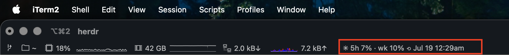

Your Claude quota, live in the terminal status bar.
Session, weekly, and per-model windows with reset times. The same numbers as Claude Code's /usage screen, without opening it.
The repo ships a machine-readable runbook (AGENTS.md). Paste one line into Claude Code and the agent clones the repo, detects which terminal you're in, wires it up, and verifies its own work.
Works in any coding agent that can run shell commands. The only step it can't do for you is drag the widget into iTerm2's status bar, and it will tell you when.
You find out you hit your weekly limit when Claude tells you. Mid-task. The number existed the whole time; it was just hidden behind a command you have to remember to run. claude-usage makes remaining quota ambient, like a battery percentage, so you can check before starting something big.

Uses the Claude Code OAuth token already on your machine (env var, macOS Keychain, or ~/.claude/.credentials.json). Read-only: it never refreshes your token, and the token goes nowhere except api.anthropic.com.
Calls the same endpoint the /usage screen reads, so you get the real remaining percentages per window, not an estimate reconstructed from token logs.
A shared 60-second cache feeds all your status bars at once. Offline shows the last good numbers marked ✳~, an expired login says so, and display modes always exit 0 so your bar never breaks.
One stdlib-only Python file (~640 lines) you can read before trusting it, covered by 87 tests. Everything else is a thin adapter per terminal. MIT.
Prefer to do it yourself? Three commands, then wire up your terminal with the per-terminal guides in the README.
Native status bar component via the Python API.
TPM plugin: set -g @plugin 'Tatendaz/claude-usage' and a #{claude_usage} placeholder.
One require in wezterm.lua renders it in the right status area.
Tab bar integration, prompt segment, or Claude Code's own statusline. Any bar that can run a command works.